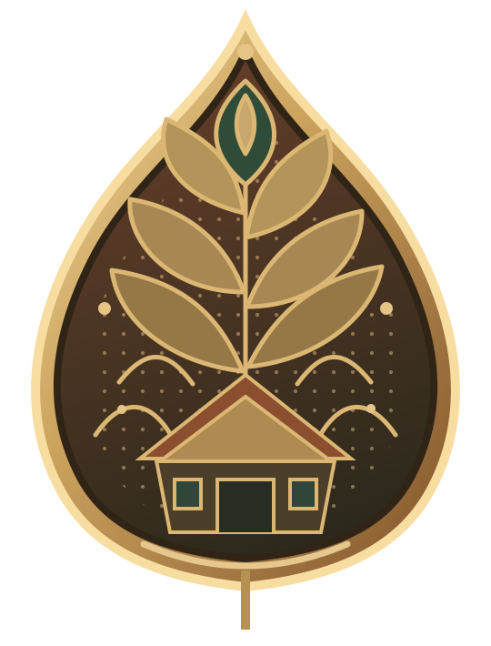

Memeriksa sesi pengelola...
PANEL PENGELOLA
Jaga setiap
suara yang masuk.
Masuk sebagai petugas yang mendapat izin mengelola laporan sekolah. Informasi pengaduan bersifat rahasia.
✧ Akses khusus petugas. Jangan bagikan password kepada siapa pun.RUANG AMAN • SWARA KABECIKAN
Dashboard Laporan.
Terima, tinjau, dan tindak lanjuti laporan secara bertanggung jawab.
PENGADUAN MASUK
Daftar Laporan
✧
Pilih laporan
Klik salah satu laporan di sebelah kiri untuk melihat kronologi, status, dan tindakan.
Data laporan bersifat pribadi. Hanya petugas resmi sekolah yang boleh mengakses. Jika ada keadaan mendesak, lakukan penanganan langsung di luar sistem ini.